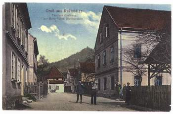

|
OBEC RYJICE
Obec Ryjice, malebné údolí
Neštěmického, jindy též Ryjického potoka, ze severu chráněného
větrem vysokých kopců a k jihu otevřeného blahodárnému slunci, od
nepaměti lákalo k budování lidských sídlišť. A tak se Ryjice, jako
jedna z mála obcí na ústecku, mohou pochlubit písemnou zmínkou již
od roku 1186 a to v latinském jazyce jako
"VILAS RIGICI". Bylo to patrně v
souvislosti s tím, že byly roku 1169 spolu s nedalekými Povrly a
Roztoky věnovány králem Vladislavem I. řádu Johanitů (v roce 1186 byla
zmiňována jako jejich zboží). Druhou možností zůstává zmínka v
písemnostech o tom, že obec darovali Měšek a Hroznata z Peruce řádu
Johanitů, ale až o deset let pozdě-
ji, tedy v roce 1179. Po roce
1400 byly Ryjice začleněny k panství hradu Blansko. Můžeme
předpokládat, že šlo o kruhovou slovanskou osadu, tvořenou několika
z části zahloubenými chýšemi a otevřeným ohništěm. Rozrodem pak
postupně vznikla přípotoční protáhlá ves. Její poloha neskýtala
vhodné půdní podmínky pro rozsáhlejší polní
hospodářství a tak své
opodstatnění nachází domněnka, že základem pozdější vsi bylo několik
domkářských a zahradnických usedlostí. Obyvatelé se živili převážně
prací v lese, výrobou smoly a také jako lodníci na blízkém Labi.
 Na
konci 16. století byly postaveny ve střední části domy čp. 11, čp.
12, čp. 13, mlýn čp. 25 v Zadních Ryjicích a rychta čp. 31. Ostatní
domy tu byly postaveny až po třicetileté válce, mlýn čp. 8 v roce
1848. Po třicetileté válce se zde rozšířilo také pěstování lnu a
ovocnářství. S téměř idylickým charakterem Ryjického potoka, hluboko
zaříznutého do příkrých strání, ostře kontrastuje fakt, že často
přinášel zkázu v podobě samovolných sesuvů podmáčené
půdy. Po velkých deštích v roce
1770 došlo k tak výrazným sesuvům půdy, že bylo rozhodnuto potok
regulovat.
Kromě několika menších jezů a
stupňů brzdících prudký spád byl v obci vybudován 15 m vysoký, v
koruně 40 m dlouhý a u paty 9 m silný jez, aby zadržoval pohyb kamení
a zpomalil proud tekoucí vody. V letech 1850-80 se obec stala osadou
vsi Mirkov, od roku 1880-1980 se však stala znovu obcí. V novodobých
dějinách významnou roli pro rozvoj obce sehrála její geografická
poloha. Tato lokalita je doslova omývána vzdušnými proudy
severozápadních
větrů, přinášejících vlhký mořský
vzduch. Toho v roce 1895 využil spolek pro stavbu dělnické léčebny v Ryjicích s názvem "Sanatorium pro plicně choré" a v roce
1902, za finanční podpory Heleny Petschkové byl otevřen první pavilon
nazývaný HELLENENHEIM, v tomto roce se byla také rozšířena kapacita
z 26 na 50 lůžek. V roce 1906 se do
léčebny v Ryjicích s názvem "Sanatorium pro plicně choré" a v roce
1902, za finanční podpory Heleny Petschkové byl otevřen první pavilon
nazývaný HELLENENHEIM, v tomto roce se byla také rozšířena kapacita
z 26 na 50 lůžek. V roce 1906 se do
projektu zapojila hornická
Ústřední bratrská pokladna v Mostě, a v Ryjicích postupně vznikla
rozsáhlá léčebna s kapacitou 160 lůžek. Ta pak sehrála důležitou
roli v boji se zákeřnou tuberkulózou i po II. světové válce. Dnes je
areál zcela zrekonstruován a využíván jako léčebna dlouhodobě
nemocných (LDN), náleží do správy Masarykovy nemocnice Ústí nad Labem
a areál budov je státem chráněnou kulturní památkou. V prostorách
léčebny se nachází 43m hluboká artézská studna s vodou teplou 12°C,
tedy asi o 4°C teplejší, než dodávají okolní studny. Po roce 1945 se
samostatné Ryjice staly v roce 1980 součástí Neštěmic a spolu s nimi v
roce 1986 dokonce částí Ústí nad Labem.
V rámci demokratizace společnosti
se v roce 1990 opět osamostatnily.
Oficiální www stránky.
|